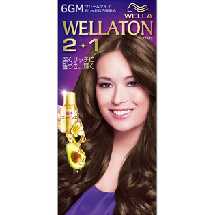
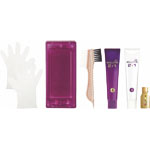

返回列表
产品名称：ウエラトーン ツープラスワン クリーム 6GM

Ｗｅｌｌａ ＡＧ ウエラトーン ツープラスワン クリーム 6GM ６０ｇ＋６０ｍｌ（医薬部外品）
メーカー Ｗｅｌｌａ ＡＧ
JANコード 4056800251001
商品の特徴
クリームタイプ
おしゃれな白髪染め
深くリッチに色づき、輝く
成分・分量
エッセンス（ヒマワリオイル・アボカドエッセンス・ホホバオイル）：７．３ｍｌ
用法及び用量
１剤・２剤・エッセンスを混合して髪に塗布してください。